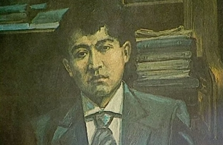

Арғын тайпасының Атығай руының Құдайберді тармағынан шыққан.

Қызықты фактілер
Мағжан туралы академик Әлкей Марғұлан: «Қазақ халқы үшін Мағжан Жұмабаевтың маңыздылығы ағылшындар үшін - Шекспирдің, орыстар үшін – Пушкиннің маңыздылығынан кем емес» деп баға берген.
1913-1916 жылдары Омбы қаласында оқытушылар дайындайтын семинарияда заманауи қазақ әдебиетінің негізін қалаушы Сәкен Сейфуллинмен бірге білім алып, семинарияны алтын жүлдемен бітірген.
Осы күнге дейін ресми мәліметтерде Мағжан 1938 жылы репрессияға ұшырап атып өлгені ғана анық айтылған. Бірақ даңқты батыр Бауыржан Момышұлы орманда жолыққан адам Мағжан екенін білсе, Атырау
облысының 92 жасар тұрғыны Абдулла Абдрахманов оның жалған екенін айтады. Ол кісінің айтуы бойынша Мағжан Жұмабаев 1951 жылы Колыма лагерінде бірге айыбын өтеген кезде ауыр науқастан қайтыс болыпты.